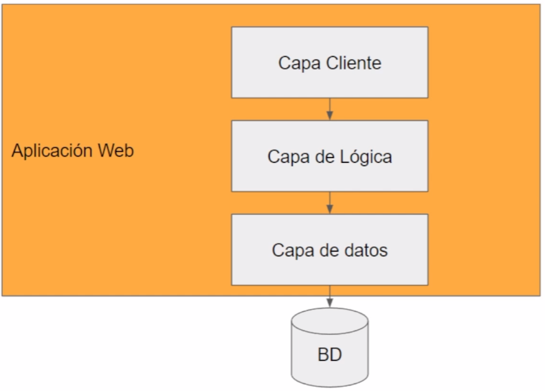
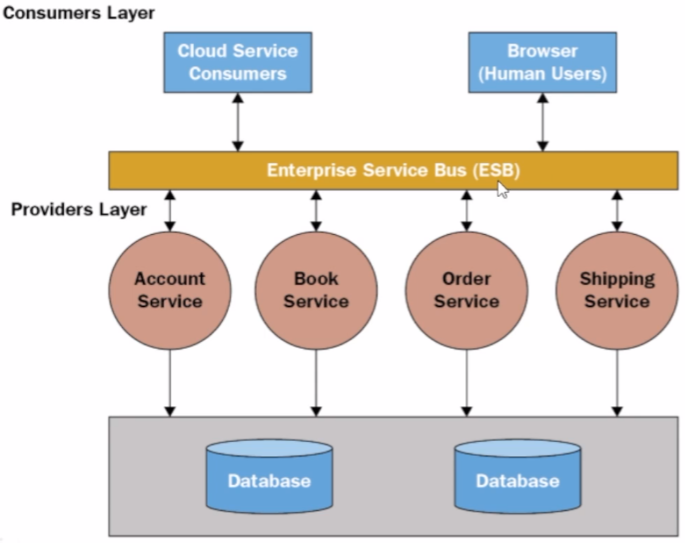
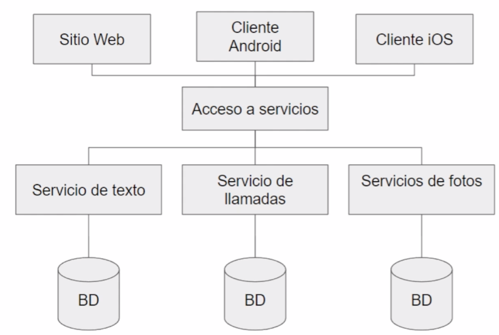
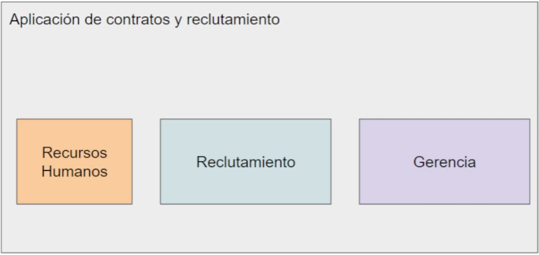
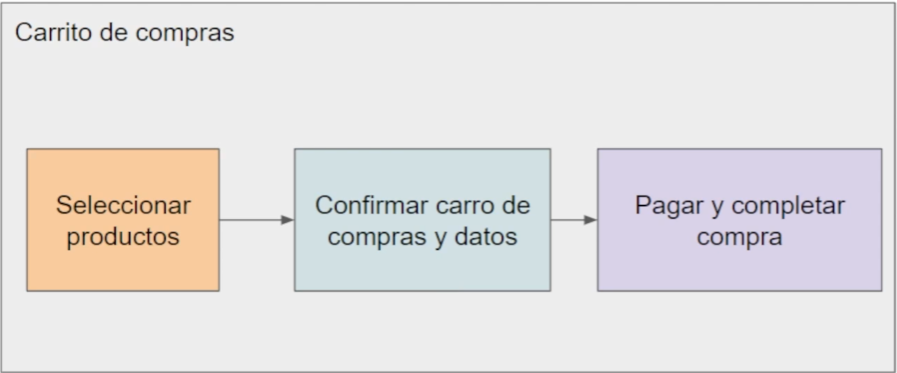
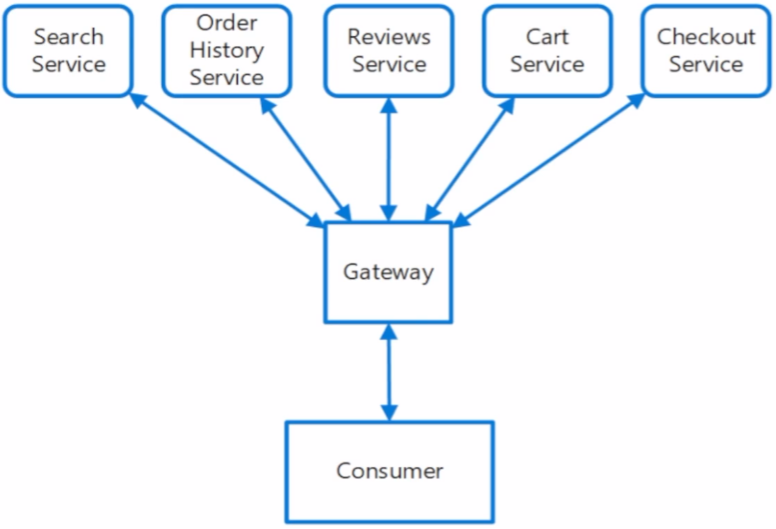

Introducción a la arquitectura de microservicios
Aplicaciones monolíticas
Características:
- Los componentes y módulos están conectados en un mismo programa, todos los componentes son importantes para que la aplicación funcione.
- Es una aplicación autónoma que no depende de componentes externos, todas las funcionalidades se encuentran dentro de la aplicación.
- Normalmente el backend y el frontend están en la misma solución, lo más tradicional es utilizar un framework fullstack como Laravel.
- Se suele implementar separación de capas, módulos o bibliotecas dependientes dentro de la aplicación.
- Es la arquitectura más tradicional para diseñar aplicaciones.
Monolitos
Los monolitos son aplicaciones desarrolladas bajo una arquitectura monolítica.
Acerca de:
- No es un antipatrón (es una arquitectura válida).
- Es una buena arquitectura para soluciones rápidas y pequeñas.
- Es perfecta para pruebas de concepto (para ciertos escenarios).
- Permiten construir aplicaciones rápidamente.
- Funciona para el 99% de las aplicaciones pequeñas.
- Los frameworks fullsctack permiten desarrollar aplicaciones monolíticas.
Ejemplo de una aplicación monolítica:

Una arquitectura monolitica es un buen punto para empezar una solución, posteriormente se pueden integrar microservicios, diferentes arquitecturas y patrones según las necesidades.
Desafíos
- Son difíciles de escalar.
El Scale-Up se refiere a aumentar los recursos del servidor donde está alojada la aplicación.
El Scale-Out se refiere a utilizar diferentes ordenadores para distribuir la demanada de la aplicación.
- Los componentes del sistema son totalmente dependientes.
- Tienen poca tolerancia ante fallos.
- Alta dependencia entre los equipos de desarrollo, se necesita una muy buena coordinación sobre el trabajo que se está realizando en la aplicación.
- Son difíciles de mantener ante un crecimiento exponencial.
- La curva de aprendizaje es mayor para comprender la aplicación orientada a nuevos desarrolladores.
Arquitectura de software y SOA
Una arquitectura de software se refiere a la relación, comunicación y estructura de los componentes en un sistema, incluye buenas prácticas y patrones comprobadas en diferentes escenarios, además nos ayudan a modelar una solución de acuerdo a nuestras necesidades.
Los servicios son aplicaciones expuestas que proveen datos o rutinas específicas para ser consumidas por otras aplicaciones, nos permiten distribuir la lógica y compartirla entre diferentes clientes.
Estándares para servicios:
- SOAP Web services
- API RESTful
- GraphQL
SOA (Service Oriented Architecture) es una arquitectura donde se distribuye la lógica en servicios que luego son consumidos a través de interfaces. Los servicios normalmente están relacionados en unidades de negocios o áreas de una compañía y por su complejidad se necesita de un software orquestador (integra servicios de diversas fuentes) o administrador de servicios.
Ejemplo de una aplicación SOA:

Un administrador de servicios es costoso.
Microservicios es una interpretación moderna de SOA.
Microservicios
Es una arquitectura orientada a servicios y a la nube que busca descomponer una aplicación en diferentes servicios para obtener alta disponibilidad, bajo acoplamiento (dependencia), descentralización y tolerancia a fallos.
Es una arquitectura ideal para escenarios de alto tráfico (volumen de datos), alta demanda (número de peticiones) y alta disponibilidad.
Cada microservicio pude estar construido en un lenguaje y tecnología diferente.
Ejemplo de una aplicación con microservicios:

La aplicación se divide por servicios o responsabilidades, y cada servicio cuenta con su propia base de datos.
Los microservicios resuelven los problemas a gran escala que presentan las aplicaciones monolíticas y dividen problemas complejos de gran magnitud en problemas pequeños.
Reglas de diseño de un Microservicio
- Un microservicio debe estar aislado y debe ser autónomo (independientes).
- Cada microservicio debe tener su propio repositorio.
- Cada microservicio debe tener su propia base de datos.
- Cada microservicio debe ser desplegado de manera independiente (diferentes servidores).
- Cada microservicio debe tener una única responsabilidad.
- Un microservicio debe ser en lo posible Stateless (no guardar datos en caché, sesión, etc.).
- Los microservicios deben manejar tipos de datos estándar (formatos estándar).
- Deben ser ligeros y deben tener una arquitectura simple.
- Deben ser monitoreables.
- Cada microservicio se puede versionar.
Ventajas de los Microservicios
- Alta disponibilidad en nuestras aplicaciones y pueden funcionar parcialmente (por módulos específicos).
- Cada servicio puede estar construido de manera diferente de acuerdo a las necesidades.
- Permite tener equipos distribuidos e independientes.
- Fácil de escalar.
- Desarrollo modular y progresivo.
- Alta tolerancia a fallos.
- Detección y corrección rápida de errores en muchos escenarios.
Desafíos de los Microservicios
- Los esfuerzos para desplegar se multiplican por el número de servicios.
- La integración de servicios al desplegar la aplicación completa.
- Integridad de los datos al tener múltiples bases de datos con valores compartidos.
- Requiere profesionales, equipos y empresas de gran madurez.
- Requiere de una cultura DevOps madura y con buenas herramientas.
- Alta complejidad al manejar gran número de microservicios.
- Alta inversión de tiempo, gestión, mantenimiento y arquitectura.
Microservicios y DevOps
- DevOps resuelve la complejidad de los despliegues en arquitecturas basadas en Microservicios.
- Microservicios es una arquitectura orientada a la nube.
- Automatización de procesos y reducción de tiempos son fundamentales.
Algunas herramientas que ayudan a desplegar microservicios:
Opciones y estrategias de despliegue
Máquinas Virtuales:
- Se utiliza una máquina virtual para desplegar cada microservicio con su propio servidor de manera aislada.
- Es muy complejo y difícil de mantener.
- Es la opción más costosa.
- Es una opción común en tecnologías legacy (antiguas).
Servicios para APIs:
- Son servicios especializados en desplegar APIs de diferentes tecnologías.
- Se deben construir APIs RESTful tradicionales.
- Azure App Service es uno de los más populares.
- Estrategia Blue/Green (producción/nuevas versiones).
Serverless:
- Ejecuta piezas de código sin preocuparse por el servidor y su configuración.
- Disminuye la complejidad de implementaciones pequeñas.
- Algunos ejemplos de estos servicios: Azure Functions, AWS Lambda, Alibaba Cloud Function Compute.
Contenedores:
- Permite desplegar una aplicación de manera aislada.
- Docker es el más famoso.
- Existen orquestadores para escenarios avanzados y complejos.
- Es el preferido porque se tiene un alto control y bajo acoplamiento.
- Fácil de migrar a otros proveedores cloud.
Podemos combinar diferentes estrategias para crear y desplegar Microservicios de acuerdo a nuestras necesidades.
Estrategias de diseño en Microservicios
Arquitectura Hexagonal
- Es una arquitectura orientada a servicios desacoplados basada en puertos y adaptadores para comunicar los diferentes microservicios.
- Permite separar las capas a través de adaptadores con su propia responsabilidad, evitando el acoplamiento de los componentes de la aplicación.
- Permite que la aplicación se use de la misma manera por cualquier usuario, programa o tarea.
Ejemplo de un arquitectura hexagonal:

MicroApps
- Se diseñan aplicaciones con responsabilidades específicas y servicios aislados.
- Se comparten componentes entre las apps manteniendo su independencia.
- Se debe tener una integración entre los datos generados por las diferentes apps.
Ejemplo de MicroApps:

Separación de roles
- Se definen microservicios por cada rol que se presente en la aplicación.
- Se refuerza la seguridad de acuerdo al rol y a cada microservicio.
- Se debe tener una integración de los datos generados por los diferente microservicios.
Microservicios por núcleo de negocio
- Se identifican las diferentes unidades de negocio de la aplicación (financiera, administrativa, reclutamiento, etc).
- Se dividen las unidades de negocio en servicios.
- Se debe tener una integración entre los datos generados por los diferentes núcleos de negocio.
Ejemplo de microservicios por núcleo de negocio:

Microservicios por flujos de trabajo
- Se identifican los pasos que realizan los usuarios y después se dividen por fases y etapas.
- Se construyen microservicios por cada flujo existente dentro de la aplicación.
- Se actualizan y mueven los datos para construir cada fase hasta finalizarlo.
Ejemplo de microservicios por flujos de trabajo:

Patrones en Microservicios
Los patrones son una guía para solucionar problemas o retos conocidos.
Ambassador - Embajador
- Es uno de los patrones más utilizados en microservicios junto a la arquitectura hexagonal.
- Permite crear una capa de abstracción entre el servicio y los componentes compartidos.
- Permite consumir servicios de monitoreo, autenticación, seguridad, utilidades, etc.
- Este patrón se debe implementar en el mismo host en el que se encuentra el servicio.
Ejemplo de un patrón embajador:

Materialized View - Vista Materializada
- Se crea una tabla en caché que se utiliza cada cierto tiempo donde los datos provenientes de las tablas originales se consolidan para que sea más fácil su lectura.
- Agiliza las consultas y mejora el performance.

Event sourcing
- Manipula las diferentes acciones de la aplicación como eventos.
- Gestiona los cambios que se presentan en la aplicación utilizando eventos.
- Las operaciones normales de un CRUD se convierten en eventos.
- Se utiliza un bus de eventos para llevar el control y el historial, como RabbitMQ o Apache Kafka.
Ejemplo de un patrón por eventos:

Otros patrones
- Retry
- Sidecar
- Priority Queue
- Anti-Corruption Layer
- Saga
- API Gateway
Patrón API Gateway
- Permite extraer toda la capa de servicios a través de una única puerta de acceso, es decir, una URL única para exponer todos los microservicios.
- Permite exponer los endpoints de manera independiente aumentando su seguridad.
- Permite cambiar y reorganizar los servicios sin afectar las aplicaciones cliente.
Ejemplo de un patrón por API Gateway:

Patrón Saga
- Permite administrar transacciones (secuencia de acciones).
- Cada transacción actualiza la base de datos o publica un evento para que continúe el siguiente.
- Se manejan transacciones de compensación para realizar acciones opuestas para realiza un rollback (devolver lo que se hizo).
Ejemplo de un patrón por Saga:

Referencias
- https://microservices.io/
- Definición de un orquestador de servicios.
- Data webhouse - Consolida los datos de múltiples bases de datos en una sola.
- Patrones de diseño en la nube.